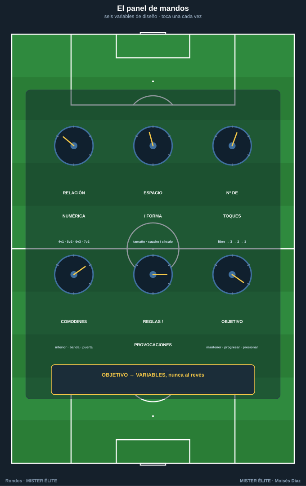
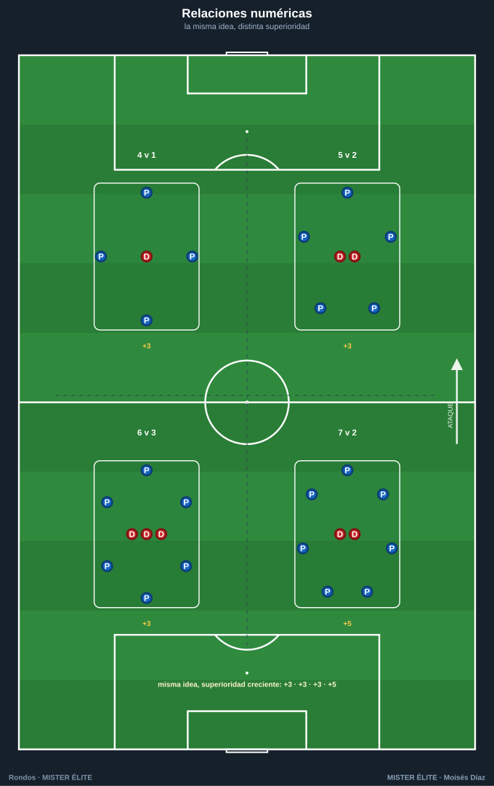
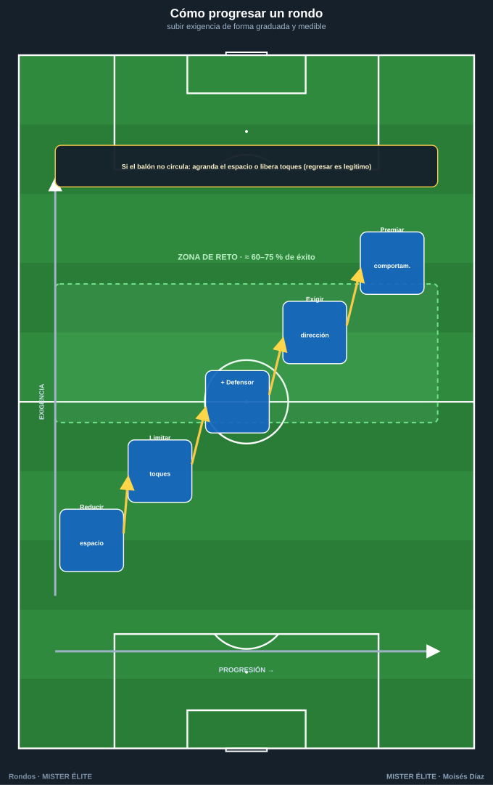
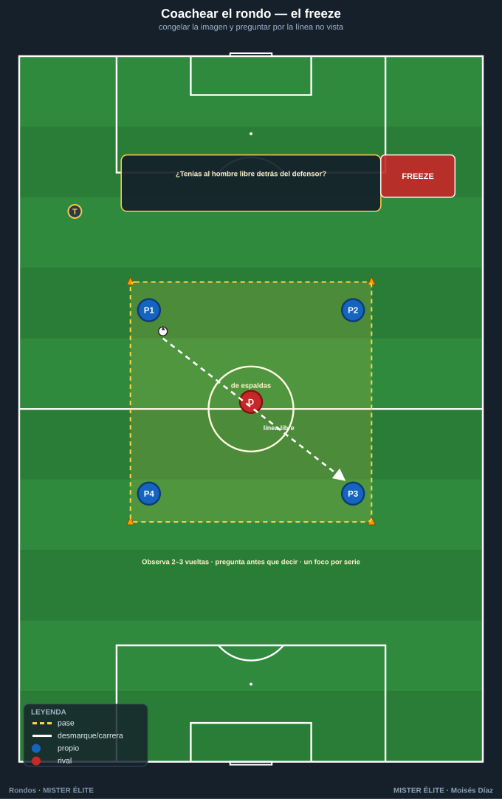

Módulo 02 · Metodología y diseño del rondo
El rondo no es un juego que "sale bien o mal": es una tarea diseñada. El entrenador no improvisa, manipula variables para provocar exactamente el comportamiento que quiere entrenar. Cambiar una sola variable cambia el estímulo. Este módulo es el panel de mandos.
1. Las variables de diseño (el panel de mandos)
Toda tarea de rondo se construye combinando seis variables. Modificar una altera la carga cognitiva, técnica, defensiva o física. Regla maestra: se toca una variable cada vez para saber qué causó el cambio.

1.1 Relación numérica (poseedores v defensores)
Fija la dificultad estructural. Se lee como ratio de superioridad: cuantos más poseedores por defensor, más fácil conservar.
| Relación | Superioridad | Estímulo dominante | Para qué |
|---|---|---|---|
| 4v1 / 5v1 | +3 / +4 | Confort, ritmo, primer toque | Iniciación, calentamiento, técnica pura |
| 4v2 / 5v2 | +2 / +3 | El clásico: líneas de pase y "tercer hombre" | Mantenimiento y circulación |
| 3v1 | +2 | Triángulo permanente, apoyo constante | Base técnica con poco espacio |
| 6v3 / 7v3 | +3 / +4 | Muchas líneas, exige levantar la cabeza | Posicional, escaneo |
| 7v2 | +5 | Superioridad enorme: foco en calidad del pase | Calentamiento de élite, ritmo alto |
| Igualdad + comodines | ≈ par | Tensión real, parecido a partido | Competitivo, transferencia |

Principio: a menor superioridad → más velocidad, más errores, más fatiga del defensor → más realista pero menos tiempo para el detalle técnico. A mayor superioridad → laboratorio limpio para pulir el gesto.
1.2 Espacio y forma
El espacio regula tiempo y distancias. Es la segunda palanca de dificultad.
- Tamaño: grande = más tiempo y pases largos (más fácil); pequeño = todo más rápido, primer toque y orientación obligatorios (más difícil). Reducir el espacio es la forma nº 1 de subir exigencia sin tocar jugadores.
- Forma:
- Cuadrado → simetría, líneas equidistantes, mantenimiento puro.
- Rectángulo → genera un sentido (largo/ancho); base para orientar y cambiar de orientación.
- Círculo → sin esquinas, apoyos infinitos, ideal para 1–2 toques (iniciación).
- Dividido en zonas / pasillos → introduce dirección y prohibiciones ("cambiar de zona obligatorio"): aquí nace el juego de posición.
1.3 Número de toques
Ataja directamente la velocidad de pensamiento y la calidad técnica.
- Libre → confort, noveles, primeras repeticiones.
- 3 toques → control–perfil–pase; transición a la exigencia.
- 2 toques → estándar de mantenimiento: obliga al primer toque orientado.
- 1 toque → máxima exigencia cognitiva: obliga a escanear antes de recibir. No introducir hasta dominar el de 2.
- Condicionado / mixto → "comodín a 1 toque, resto libre"; individualiza la carga.
1.4 Comodines (apoyos neutrales, fichas ámbar)
Juegan siempre con quien posee. Crean superioridad artificial y, sobre todo, fijan dónde queremos que circule el balón. Su ubicación es la enseñanza.
- Interiores → enseñan a jugar entre líneas y el rol de pivote.
- Exteriores / perimetrales → amplían el campo, dan salida segura.
- De banda → fuerzan el cambio de orientación y la amplitud.
- Comodín "puerta" entre zonas → premia la progresión (solo se usa para avanzar de zona).
Variar sus toques (p. ej. a 1) lo convierte en pared/relé, no en refugio.
1.5 Reglas y provocaciones
Las provocaciones fuerzan un comportamiento sin pedirlo verbalmente. Es la herramienta más fina: no se explica el principio, se provoca que aparezca.
- "Pase al jugador enfrente del defensor que presiona" → juega la línea que abre el rival.
- "Vale doble el pase de primeras tras recibir entre líneas" → premia el pase interior.
- "Si el balón cambia de zona, suma punto" → provoca el cambio de orientación.
- "Prohibido devolver al que te la dio" → obliga al tercer hombre.
- "3 toques seguidos del que roba = gol del defensor" → exige juego colectivo también al recuperar.
1.6 Objetivo de la tarea (la intención táctica)
Da sentido a todas las demás variables. Antes de medir nada, define qué entrenas:
- Mantener → conservar bajo presión (4v2, 5v2).
- Progresar → avanzar con dirección (zonas, comodín-puerta).
- Orientar → cambiar el punto de juego, escanear (rectángulo, comodines de banda).
- Presionar / recuperar → foco en el defensor: robar y transición.
Regla de oro: objetivo → variables, nunca al revés. Primero decides el principio a entrenar; luego eliges relación, espacio, toques, comodines y provocaciones que lo hagan aparecer de forma inevitable.
2. Cómo progresar un rondo (fácil → difícil)
Progresar = subir exigencia de forma graduada y medible, manteniendo la tasa de éxito en una "zona de reto" (orientativo: los poseedores conservan en torno al 60–75 % de las series). Palancas, de menor a mayor coste de explicar:

- Reducir el espacio → la palanca más limpia: misma tarea, menos tiempo.
- Limitar los toques (libre → 3 → 2 → 1) → exige primer toque orientado y escaneo.
- Añadir un defensor (4v1 → 4v2 → 5v3…) → presión real y fatiga.
- Exigir orientación / dirección → de "mantener" a "jugar al lado libre" o "progresar de zona".
- Premiar comportamientos (puntos dobles, condiciones) → afina el detalle sin endurecer la mecánica.
Ejemplo de progresión real (misma familia, 4 escalones):
| Escalón | Diseño | Qué añade |
|---|---|---|
| 1 | 5v2 · cuadro 12×12 · libres | Circular cómodo, leer las dos sombras del defensor |
| 2 | 5v2 · 10×10 · 3 toques | Menos espacio + control orientado |
| 3 | 4v2 · 10×10 · 2 toques | Menos superioridad, primer toque obligado |
| 4 | 4v2 · 9×9 · 2 toques + "doble el pase interior entre los dos defensores" | Provocación táctica: jugar la línea que rompe |
Regresar es igual de legítimo: si el balón no circula, agranda el espacio o libera toques antes que repetir instrucciones.
3. Cómo coachear un rondo
El rondo es alta densidad de repeticiones; el entrenador es gestor del estímulo, no espectador.
3.1 Feedback: cuándo y cómo
- Cuándo: prioriza el feedback en frío (entre series). Interviene "en caliente" solo para un error que se fija y repite. Regla práctica: observa 2–3 vueltas antes de hablar.
- Cómo:
- Preguntar antes que decir ("¿tenías al hombre libre detrás del defensor?") → desarrolla el escaneo.
- Congelar (freeze) una imagen concreta cuando la enseñanza es posicional: parar, señalar la línea no vista, reanudar. Breve.
- Demostrar el gesto cuando el fallo es de ejecución.
- Dosis: poco y concreto. Un foco por serie.

3.2 Momentos de intervención
- Antes: objetivo en una frase ("hoy: primer toque hacia donde voy a jugar").
- Durante: solo correcciones puntuales y de intensidad; mantener el ritmo.
- Pausas: el grueso del coaching. Pregunta, congela, reajusta una variable.
- Cierre: 30" de conexión con el partido ("esto es la salida presionada del domingo").
3.3 Detalles técnicos a corregir (la checklist del ojo)
- Perfil / orientación corporal: recibir medio girado, viendo la siguiente línea de pase.
- Primer toque orientado: el control ya direcciona hacia donde se va a jugar.
- Escaneo (head-check): mirar antes de recibir. Es la causa raíz de la mayoría de pérdidas.
- Calidad y peso del pase: al pie correcto, raso, firme (un pase blando lo intercepta el defensor).
- Cuerpo y apoyos: ofrecerse en línea de pase, proteger con el cuerpo, moverse tras pasar (pasar y apoyar, no pasar y mirar).
3.4 Gestión de la intensidad
- El rondo decae solo: series cortas e intensas con descanso claro.
- Controlar la carga del defensor (es quien más corre): rotarlo con frecuencia para que la presión sea real.
- Distinguir el rondo de activación (media, técnico, riesgo bajo) del competitivo (alta, con marcador) y ubicarlos en consecuencia.
4. Errores comunes, carga y ubicación
4.1 Errores de diseño
- No definir el objetivo → un rondo "bonito" que no entrena nada.
- Relación mal calibrada → demasiada superioridad (aburre) o demasiado poca (no circula).
- Espacio inadecuado → grande mata la exigencia técnica; pequeño con noveles colapsa la tarea.
- Demasiadas reglas a la vez → satura el cognitivo. Una provocación clave.
- Comodines mal ubicados → se colocan donde quieres que ocurra el juego, o sobran.
4.2 Errores al dirigir
- Hablar demasiado / parar constantemente → mata el ritmo y la densidad.
- Corregir solo la ejecución y nunca la decisión → mejora el gesto, no el jugador.
- No rotar al defensor → presión falsa y carga injusta.
- No conectar con el partido → el jugador lo hace "porque toca".
- Tolerar baja intensidad o alargar hasta la fatiga técnica.
4.3 Carga y ubicación en la sesión
- Calentamiento / activación: alta superioridad (5v2, 7v2), técnicos, riesgo bajo, intensidad creciente.
- Parte principal: rondos con objetivo táctico (orientación, progresión, presión) y, si procede, marcador.
- Según el día del microciclo (MD): ajustar la carga a la proximidad del partido (se desarrolla en el módulo 03).
- Como herramienta: el rondo puede abrir, vertebrar o servir de transición entre bloques. No es solo "el calentamiento".
Ideas clave
- Seis variables: relación numérica, espacio/forma, toques, comodines, reglas/provocaciones y objetivo. Toca una cada vez.
- Objetivo → variables, nunca al revés. Primero el principio; luego el diseño que lo provoca.
- Reducir el espacio es la palanca más limpia para subir exigencia; liberar toques o agrandar la mejor para bajarla.
- Mantén la zona de reto (≈60–75 % de éxito): ni aburre ni colapsa.
- Coaching: observa 2–3 vueltas, feedback en frío, pregunta y congela, un foco por serie.
- Rota al defensor: es quien recibe el estímulo condicional y quien hace real la presión.
Errores comunes
- Diseñar sin objetivo, o cambiar varias variables a la vez (no sabrás qué causó el cambio).
- Relación numérica o espacio mal calibrados respecto a la zona de reto.
- Amontonar reglas y saturar el cognitivo.
- Comodines decorativos que no refuerzan el principio.
- Hablar de más, corregir solo la ejecución, no rotar al defensor y no conectar con el partido.
MISTER ÉLITE — Moisés Díaz